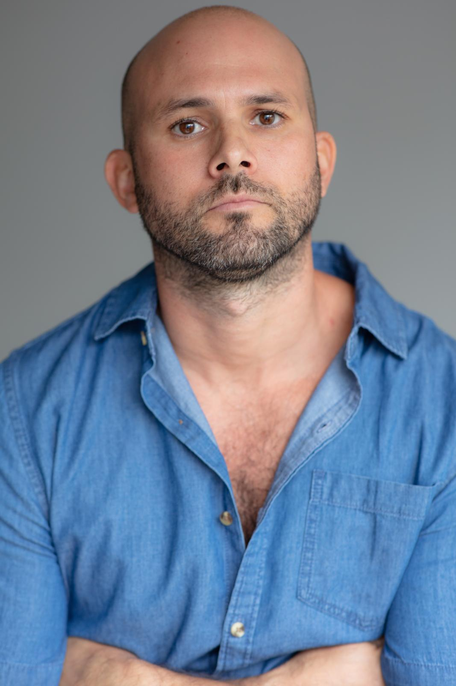

Denis Lwowski
Role: Mike
Denis Lwowski is attached to Onus Probandi in a performer capacity.
Denis Lwowski is an emerging screen actor with a strong interest in film and television storytelling. He enjoys digging into character psychology and bringing grounded, believable performances to camera. With a natural, relaxed screen presence, Denis works comfortably across a range of tones, from subtle dramatic moments to lighter, character-driven scenes.
Originally a native German speaker who lives in Australia, Denis brings an international edge to his work and enjoys roles that feel honest, textured, and human. His latest supporting role was in the crime comedy short "Shrooms", which was nominated to enter the AACTA Student Short Film division. He is now very much honoured to be part of Adrian Alback's crime short film "Onus Probandi".
Denis is always sharpening his on-camera craft through self-tapes, scene work, and ongoing creative development. He thrives in collaborative environments and is drawn to projects that value nuance, realism, and strong storytelling.